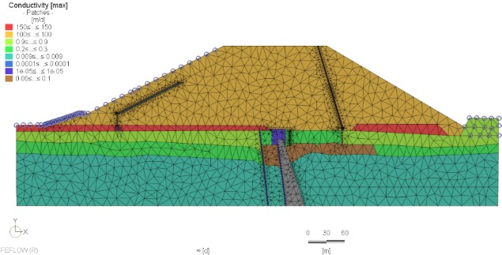
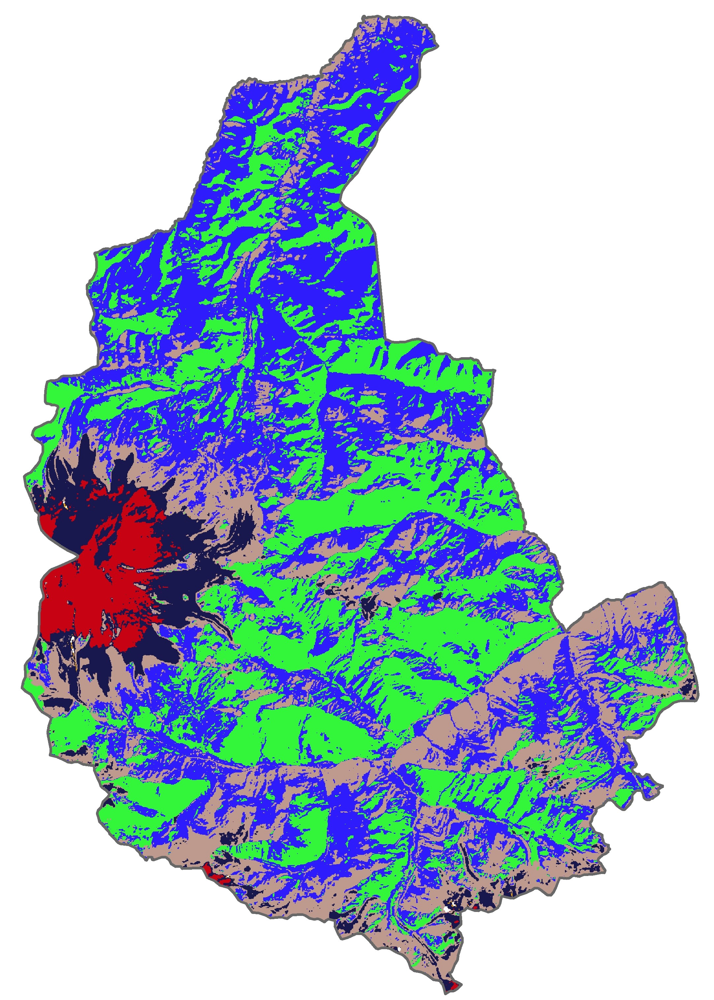

Active faulting of Ubsunur depression boundary

This little research is a part of RSF project "Neotectonics and active tectonics of the North part of Central Asia". Me and my colleagues visited the Ubsunur depression and studied South Tannu-Ola fault in Tuva Republic (Russia) within the Mongolian border. We wanted to reveal the relationship between the depression and the Tannu-Ola Ridge, as the boudary between them was previously considered to be an active thrust fault (reverse fault).

The only section where thrust faulting could have been observed, was studied in Kholu river valley. Geomorphological and structural geological investigation provided us with the geological body that, we think, is rock landslide as below the river alluvium (~QIII) is undisturbed and horizontal with no evidence of fault plane or any scarps. So the border is not active. However, is it disjunktive at all?

Close to this boundary in the ravine, I measured dip and strike of geological layers at several sites and then visualized the structure of the deposits using the gempy python 3.9 library. The program inputs the field measurements as a text file, and the package performs kriging interpolation.

Thus, we are convinced that this boundary is a fault, formed after the Miocene, but currently not active.
The geomorphological evidence of activity of the South Tannu-ola fault look quite different. Here, displacements of river terraces and fault scarps are observed. The Erzin-Agordag fault in the northeast of the depression also looks different, where horizontal strike-slip deformations are clearly visible. Here we dug a tranch to trace the displacements in the section, and I did a UAV survey. You can see the displacement of the stream channels in the images. I can even determine the magnitude of the seismic event that caused them from the Wells and Coppersmith, 1994 regressions. In addition, the satellite image shows a continuous scarp (seismic rupture), by which the magnitude can also be estimated. Here it is equal to 7 for channels and 6.7 for the scarp (the latter option is more probable). Anyway, these dependences can be used only for an approximate estimate.
To sum up,